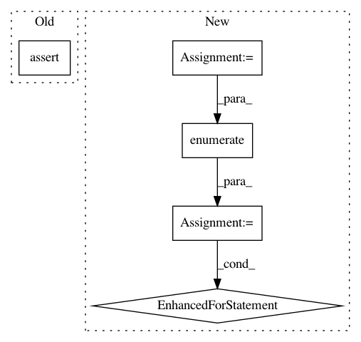

c96649bb6e1dfeb9479de6c5e8547d510c6b7a32,gluoncv/auto/tasks/utils.py,,auto_suggest,#Any#Any#Any#,80
Before Change
elif isinstance(estimator, (tuple, list)):
pass
else:
assert issubclass(estimator, BaseEstimator)
estimator = [estimator]
config["estimator"] = ag.Categorical(*estimator)
def get_recursively(search_dict, field):
After Change
pass
else:
if isinstance(estimator, ag.Space):
estimator = estimator.data
elif isinstance(estimator, str):
estimator = [estimator]
for i, e in enumerate(estimator):
if e == "ssd":
estimator[i] = SSDEstimator
elif e == "yolo3":
estimator[i] = YOLOv3Estimator
elif e == "faster_rcnn":
estimator[i] = FasterRCNNEstimator
elif e == "center_net":
estimator[i] = CenterNetEstimator
config["estimator"] = ag.Categorical(*estimator)
// get dataset statistics
// user needs to define a Dataset object "train_dataset" when using custom dataset
In pattern: SUPERPATTERN
Frequency: 3
Non-data size: 5
Instances
Project Name: dmlc/gluon-cv
Commit Name: c96649bb6e1dfeb9479de6c5e8547d510c6b7a32
Time: 2021-01-19
Author: tmwang428@outlook.com
File Name: gluoncv/auto/tasks/utils.py
Class Name:
Method Name: auto_suggest
Project Name: ClimbsRocks/auto_ml
Commit Name: 9ad2455b1b18b2a7b657ed594503017227982462
Time: 2017-11-07
Author: ClimbsBytes@gmail.com
File Name: tests/test_prediction_intervals.py
Class Name:
Method Name: test_predict_uncertainty_true
Project Name: keras-team/keras
Commit Name: 9333179ad96fad2760221f2b3e2dec31f7c77f40
Time: 2016-12-19
Author: francois.chollet@gmail.com
File Name: keras/utils/test_utils.py
Class Name:
Method Name: layer_test